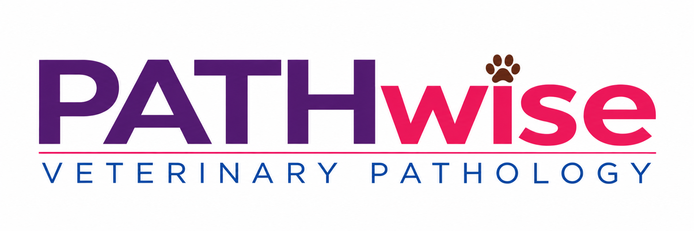
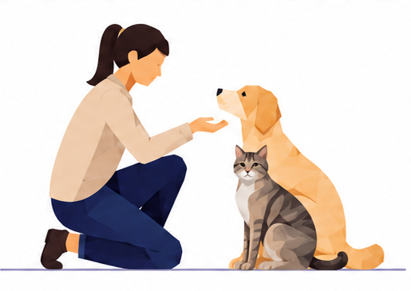

1
SUBMIT CASE
Complete a short
online form


Pet biopsy consultation by an American board-certified veterinary pathologist, with a streamlined digital workflow for referring veterinarians.
HOW IT WORKS
SUBMIT CASE
Complete a short
online form
SEND BLOCKS
Ship as per
instructions
US BOARD-CERTIFIED
PATHOLOGIST REVIEW
Digital slide review
by the pathologist
RECEIVE REPORT
Diagnosis, interpretation
and clinical recommendations
SUBMIT A CASE
Use the PATHwise biopsy submission form. After submission, you will receive the PATHwise Case ID and next-step instructions through the existing case workflow.
MEET THE PATHOLOGIST
BVSc & AH, MVSc, PhD
Diplomate, American College of Veterinary Pathologists
Dr. More is an American board-certified veterinary anatomic pathologist with more than 10 years of experience working in diagnostic pathology. His diagnostic experience includes cases from companion animals, exotic animals and food animals, along with diagnostic histopathology, digital pathology, research pathology and veterinary pathology education.
PATHwise is designed to give referring veterinarians clear, clinically useful biopsy interpretation through a focused digital pathology workflow.
FREQUENTLY ASKED QUESTIONS
PATHwise provides veterinary biopsy consultation for referring veterinarians. Submit the clinical history, biopsy site and your diagnostic questions through the online case form.
No. An existing pathology report can be included when available, but it is not required to submit a case.
If you have formalin-fixed tissue but do not yet have histology slides, contact a local histology processing laboratory. Your veterinarian may already have a laboratory they routinely work with.
Send the formalin-fixed tissue to the laboratory and request paraffin blocks and H&E-stained slides. For excisional biopsies where surgical margins need to be evaluated, request surgical margin evaluation and ask the laboratory to ink the margins before trimming and processing.
Once the paraffin blocks and/or slides are ready, they can be sent through the PATHwise submission workflow for specialist pathology review.
Not sure what to request from the histology laboratory? Contact PATHwise before submitting the tissue and we can provide guidance.
Submit the case online first. After submission, follow the case instructions for sending the paraffin block(s) for slide preparation and digital scanning.
Typical turnaround is 3–5 business days after successful scanning. Cases requiring additional material or ancillary testing may take longer.
Yes. Referring veterinarians can contact PATHwise to discuss the pathology findings and questions related to the consultation report.
CONTACT